Orbit Visualization Tool User Guide
version 3.0
The Orbit Visualization Tool is a software for visualization of
satellite orbits in the Earth's magnetic field. The program can
display satellite orbits in five coordinate systems
(GEI, GEO, GSM, SMC, GSE), satellite
footprints projected on the Earth's surface and shown in either geographic
(GEO) or geomagnetic (SMC) coordinates. The software can load orbits on file as well as use online orbit data via NASA's
Satellite Situation Center's (SSC) Web Services.
In addition to satellite orbits the
software computes and displays various models of magnetospheric
structures, magnetopause, bow shock and electric potential, geomagnetic
activity, and interplanetary field conditions. The models are time-dependent
through either user-editable activity table files, or online magnetospheric data via NASA's Space Physics Data Facility (SPDF) OMNI2 data, which control the model's structure and properties.
The program can be used to plan operations or interpret measurements
from scientific satellites, to prepare ground-based satellite
coordination, or as an educational tool in astronomy and geophysics.
OVT can be installed on Linux, Mac OS X, and Windows (see release notes). The
graphics used in this program is based on a Visualization Toolkit (VTK),
which uses 3D accelerating hardware if present, but will still work
with a simple 2D graphics card.
The graphics window shows objects in one of five geocentric Cartesian coordinates described
below. Let us denote the unit vector toward the Sun by S and the unit
vector along the magnetic dipole axis by D (positive northward).
- GEI: Geocentric Equatorial Inertial
- X-axis pointing toward the first point of Aries (the position of Sun at vernal equinox).
- Z-axis points toward geographic north.
- GEO: Geographic
- Z-axis along the geographic north pole.
- X-axis in the equatorial plane at the Greenwich meridian (longitude=0).
- GSM: Geocentric Solar Magnetospheric
- X-axis pointing toward the Sun.
- Y-axis perpendicularto the Earth magnetic dipole and the Sun direction
(Y=DxX).
- SMC: Solar Magnetic Coordinates
The difference between GSM and SMC is rotation around the common Y
axis by the dipole tilt angle.
- GSE: Geocentric Solar Ecliptic.
- X-axis points toward the Sun.
- Z-axis points toward the ecliptic north.
In all coordinates the third axis, not mentioned above, completes the right-handed Cartesian triad (X,Y,Z).
The footprint projections on the Earth are shown at an altitude of 100 km above the average
sphere of 6373.2 km in two
coordinates system: geographic GEO (longitude and latitude), and magnetic SMC
(magnetic local time and magnetic latitude). Field line tracing is done with the selected magnetospheric
model (internal + external). Please note that in SMC
coordinates footprints are shown as MLT
(magnetic local time) and MLAT (magnetic latitude) that are equivalent to dipole geomagnetic coordinates.
The corrected geomagnetic coordinates are not used for display purposes because they
do not represent an orthogonal transformation and therefore cannot be included
in the global coordinate transformation matrices.
- The magnetic field models include standard internal field model IGRF 1950-2000 and
Tsyganenko models of the external magnetospheric field: T87, T89, T96 and T2001.
- The bow shock model is according to Farris et al, GRL, v. 18, p.1821,
1991, and Cairns et al., JGR, v.100, p.47, 1995
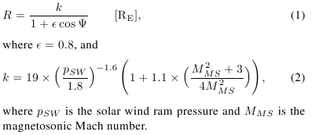
- The magnetopause model is according to Shue et al., JGR, v. 103, p. 17691, 1998.
- The electric potential model is according to D. Weimer, GRL, 23, 2549, 1996.
All these model implementations have user-editable time-dependent parameter data.
The user interface consists of one visualization window integrated with a tree-like
control panel. Objects in the visualization window are mouse manoeuvrable:
The graphics is mouse manoeuverable: primary mouse button to rotate the
visualization in 3D, CTRL+primary mouse button to rotate the visualization in 2D, secondary mouse button to zoom in and out, and SHIFT+primary mouse button to
move the focus.
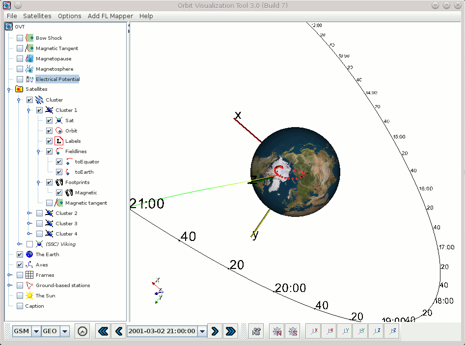
The picture above shows the main window displaying the orbit of the Cluster1 satellite in GSM coordinates, current
satellite position at time 2001-03-02T21:00:00Z and the magnetic field line
passing through the satellite at this position. The footprints are shown in GEO
coordinates. The position and size of the labels can be controlled by the user.
| 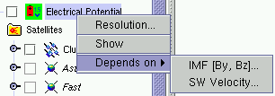 |
The left-side panel shows list of actors
that can be displayed on the right-hand side scene. Each actor has some
editable properties and can be shown/hidden on the scene. This popup menu is
activated with the right (secondary) mouse button, after a selection click with
the left (primary) button. |
The orbital module includes a standard ESOC program for computing position
and velocity of Cluster, Double Star or any other s/c with the orbital parameters
defined in the Long Term Orbit File (LTOF) format. For orbits defined by TLE (two-line elements) the SGP4/SDP4 orbit propagator is used. The location accuracy is however reduced for TLE files. The OVT distribution in itself includes orbit files for the Cluster, Double Star, and Freja satellites. To make a satellite orbit data file available from inside the GUI, click on the menu item
Satellites -> Import Satellite File... and select a .tle or .ltof orbit file. The latest Cluster orbit files can be downloaded from
http://jsoc1.bnsc.rl.ac.uk/pub/fd_files/ltof/. Orbital elements for civilian satellites can be obtained from e.g. CelesTrak.
It is also possible to add satellites using online orbit data from NASA's Satellite Situation Center's (SSC) Web Services.
These satellites can be recognized in the interface tree by their name being prefixed with "(SSC)".
Displaying orbit data using this feature may lead to slight delays when new orbit data is downloaded. Also, while this feature works most of the time, the remote online orbit database may on rare occasions be "locked" (usually briefly) or be offline. This is of course beyond the control of OVT but is ameliorated by OVT's internal caching of SSC orbit data. Selecting the menu item Satellites -> Select SSC-based Satellites... in the main window displays the SSC-based satellite selection window depicted below. Satellites checked in the "Bookmarked" column are also represented under the Satellites menu in the main window for easier access (select/deselect). Satellites checked in the "Added" column are added to the main interface tree directly. Note that all columns can be sorted for easier navigation.
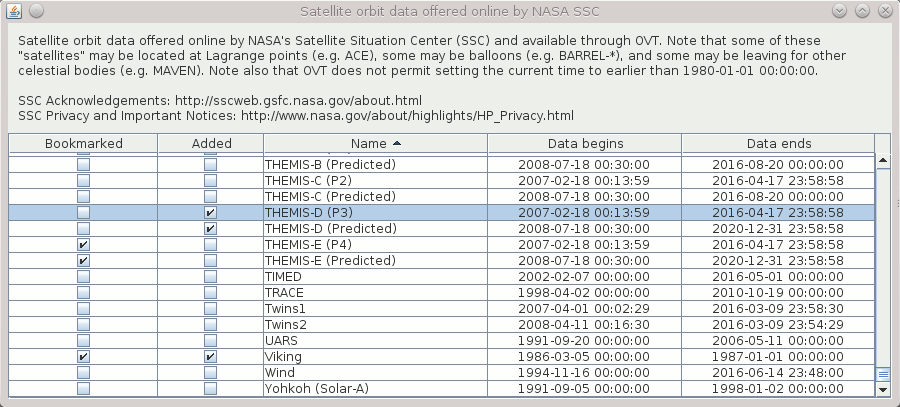
Information about the start and stop time of the available orbit data as well as a spacecraft's automatically estimated approximate
period of revolution is available in the satellite's Info window.
Note: A spacecraft for which there is not enough orbit data to cover the entire currently selected time period is automatically unchecked in the interface tree (and can not be manually re-checked) and thus automatically disappears from the visualization. Hence, every plotted orbit covers the entire currently selected time interval. A spacecraft for which there is no orbit data for the current time interval has its name written in italics in the interface tree.
If a spin data file (e.g SatelliteName.spin) is present in the .ovt/<version number>/odata directory
under the user directory, then it is is used to compute the orientation of the spin axis with respect to the
magnetic field, velocity vector, and the sun direction. The .spin files must be
in the format required for CLUSTER project, i.e.
1 P 1994-09-01T00:00:00Z 1994-09-07T12:30:00Z 341.00 77.00
14.ffffff 333.800 776.1 0.0 0.0 0.00 0.00 1994-09-01T01:10:00Z
| 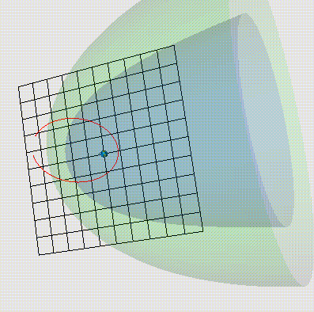 |
The bow shock and the magnetopause have editable properties that
control their shape and positions. SWP is the solar wind pressure (nPa)
and IMF stands for Interplanetary Magnetic Field. |
| 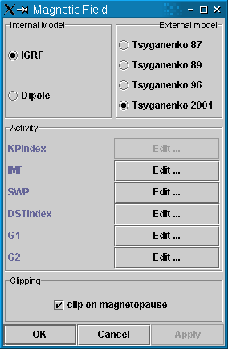 |
Magnetic field models are controlled by the
window shown in the left. Each model has an associated set of
parameters which values can be configured to come either from user-controlled tables,
or (for most of them) from online OMNI2 data, see below. At present we have four
versions of the Tsyganenko models, which can be combined with IGRF or
dipole internal field models.
Tsyganenko 2001: The two IMF-related indices G1 and G2 take into account
the IMF and solar wind conditions during the preceding 1-hour interval; their
exact definition is given in the paper by N.A. Tsyganenko "A new data-based model of the near
magnetosphere magnetic field. 2. Parameterization and fitting to observations".
The checked MP clipping
means that the terrestrial magnetic field lines are not allowed to go
outside the model MP surface (more than 0.5 Re).
|
| 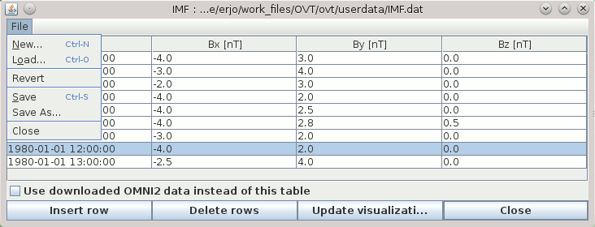 |
For each type of activity data there is an associated user-controlled table
which can be manually edited using the data editor.
If the particular type of activity data can also be retrieved from OMNI2 data, then there is a checkbox signalling
whether or not the corresponding data are retrieved from OMNI2 data instead of the table.
When data for a given point in time is requested from the table, then the data record with the time
earlier or equal to the requested time is taken from the data editor.
If the requested time is earlier then the time of the first record - the first record is used.
|
| 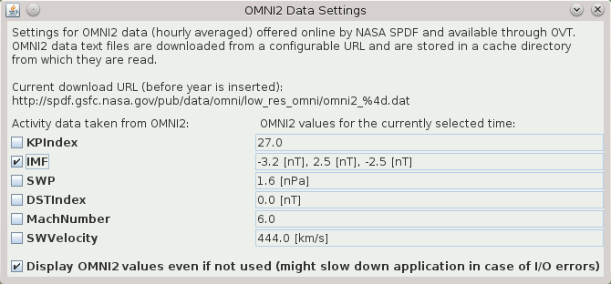 |
The picture to the left depicts the OMNI2 Data Settings window accessible from the menu item Settings -> OMNI2 Settings...
The activity checkboxes signal whether or not the corresponding activity data are retrieved from OMNI2 data instead of the corresponding user-controlled tables and are equivalent to the checkboxes in the data editors. For convenience and as a reality check, the current values as understood by OVT are displayed (unless the feature is disabled).
Note: The OMNI2 data are automatically downloaded as files (each covering a year) from
NASA's Space Physics Data Facility (SPDF), a
public online source, and are then cached locally on disk. The exact URL used for downloading is configured in .ovt/<version number>/conf/ovt.conf (directory under the user directory) but is also displayed in the OMNI2 Data Settings window. It can be set to an http://, ftp://, or file:// URL. As with NASA SSC online orbit data, there may be delays when OVT downloads new data and the online source may be offline. Files can also as a last resort be downloaded manually and be placed in the caching directory (.ovt/<version number>/cache/OMNI2/; create it if it does not already exist). OVT will however always try to silently replace cached files when it thinks the current ones are too old.
|
| 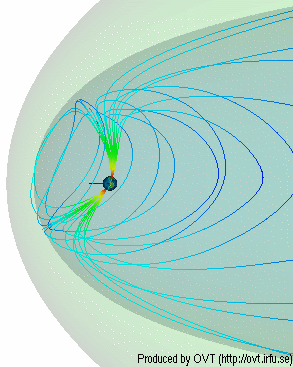 |
Magnetospheric structure represents a shell
of outermost field-lines which are determined from current
magnetic field model. If magnetopause (MP) clipping is set,
the field lines are not permitted to extend outside the MP model. If
the MP clipping is off, then the field-lines derived from the
magnetospheric model can extend significantly beyond the MP model. However
in such a case their footprint is very narrow and corresponds to the
topological magnetic cusp (for models T87, T89).
Fieldline thickness can be specified (view the image).
|
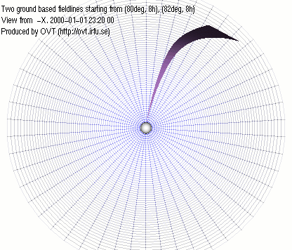
View from -Y
View from Z
|
On this pictures you can see magnetopause, in a wireframe representation, and a
surface created from two fieldlines, starting form
the Earth.
|
To visualize data click on the satellite with the right (secondary) mouse button and choose "Load Data..."
Load Data Wizard will apear.
The data file should contain two columns:
1-st - Time
2-nd - Magnitude
Time can be specified as DATE-TIME pair or in days/hours/minutes/seconds.
In the last case you will be asked by OVT to specify the offset time.
DATE format: YYYY-MM-DD or YYYY/MM/DD or YYYY/DDD
TIME format: hh:mm or hh:mm:ss or hh.hhhh or sssss.ss
Data file example:
# comment - this is a Polar current magnitude data
2001-12-30 12:00:00 4.5
2001-12-30 12:01:00 5.6
.........
|
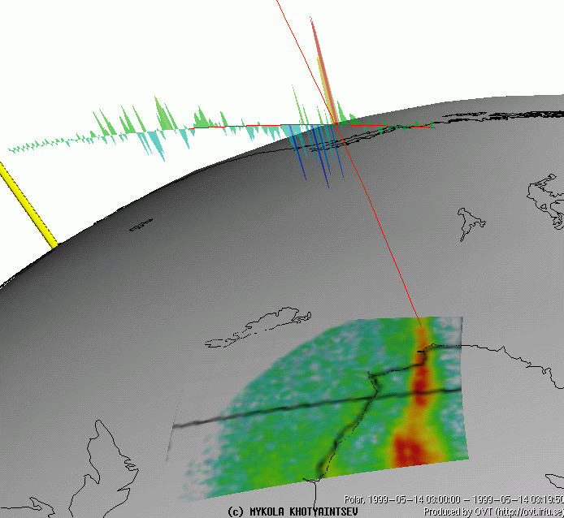
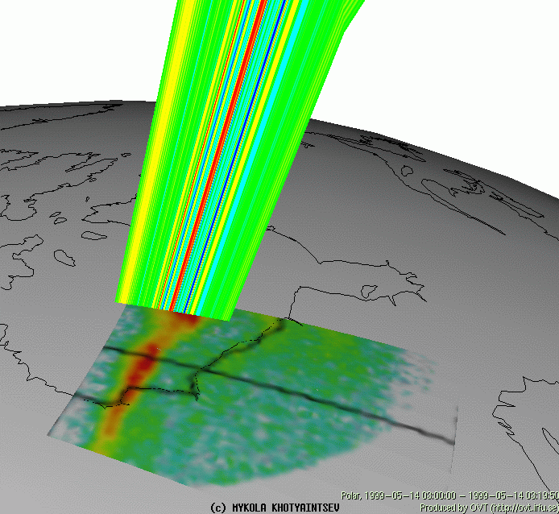
|
| 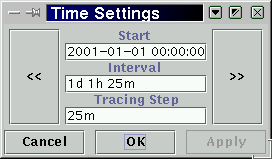 |
OVT operates by always having a currently selected time interval (used for e.g. plotting segments of orbits) as well as a currently selected point in time within the currently selected time interval (used for e.g. drawing satellites, or the exact rotation of the Earth).
The time settings window (left) can be display when clicking the time (clock) symbol in the tool bar at the bottom of the main window. The window displays the currently selected time interval in the form of the interval's start time (Start), it's length (Interval), and in how small pieces of time it will be subdivided (Tracing Step) for various purposes: stepping, labels, orbit spline interpolation (for graphic representation of orbit only). "<<" and ">>" buttons are used to shift the start time backward or forward in time by the length of interval. Keyboard shortcuts <modifier>+<left/right arrow> correspond to the graphical buttons, but the <modifier> key may differ between platforms (e.g. Alt on Linux). Similarily, <modifier>+<ENTER> corresponds to the "Apply" button for convenience.
In the tool bar at the bottom of the main window, the time advance arrows < and > step backward or forward in time by one step within the current time interval. Double arrows << and >> change the current time to the beginning or end of the currently selected time interval.
|
| 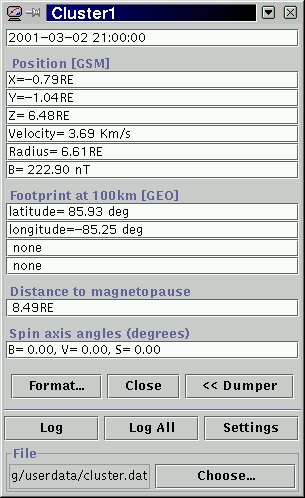 |
Orbit Monitor can be accessed by Sat's
pop-up menu. Orbit Monitor shows the current satellite position, velocity,
distance from the center of the earth, magnetic field conditions (derived from
the magnetic field model), and footprint coordinates. The footprints
are shown for both hemispheres, if they exist. In addition, the orbit monitor
shows the estimated radial distance to the current model of the
magnetopause and the angle of the satellite spin axes with respect to the
magnetic field vector, satellite velocity, and the sun direction. The
later data require presence of the spin axis attitude file in the .ovt/<version number>/odata/
directory. The spin attitude file has suffix .spin and must be in the
format required by the CLUSTER project. The .spin files included in the
distribution contain artificial data for demonstration purposes. They
should be removed or replaced by real data.
Dumping of orbit data
Dumper panel is expanded if "Dump >>" is pressed;
"Log" will dump the data specified in the Dumper Settings Window to a selected file.
"Log All" will dump the data for the whole orbit.
"Settings" button pops-up dumper settings window.
Data available for dumping: data from the orbit monitor, Bx, By, Bz, Dipole Tilt angle.
|
|
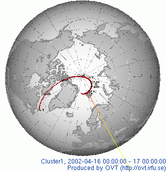
|
The picture shows footprint of CLUSTER1
over northern polar regions with time lables.
The tic marks are every 5 minutes.
Footprints can be
shown either in GEO or in SMC coordinates. |
| 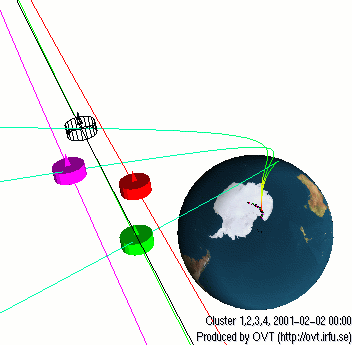 |
Zooming at the CLUSTER spacecraft shows the
spacecraft trajectories (red, black, green, magenta) and the threading field-lines (green).
The satellite is depicted as a sphere or as cylinders with a small pyramid, depending on the
absence or presence of the spin attitude files. In the later case, the
pyramid shows the actual orientation of the spin axis.
The color convention:
- Cluster 1 - red
- Cluster 2 - black
- Cluster 3 - green
- Cluster 4 - magenta
|
| 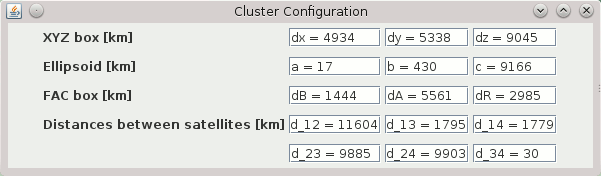 |
The CLUSTER configuration window shows configuration
parameters of the four spacecraft.
XYZ box shows the minimum box size in current coordinates that will
confine all four spacecraft.
Ellipsoid shows three axes of an ellipsoid that will confine
all spacecraft.
FAC box shows a box in local field-aligned coordinates (FAC) around the
gravity centre that will confine four spacecraft: dB-along the
field-lines, dA-in the azimuthal (LT) direction, and dR-in the dBxdA,
pseudo-radial direction.
Distances between satellites shows the distances between every pair of spacecraft.
|
| 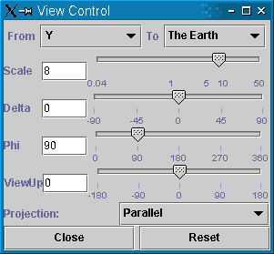 |
Control of the viewer position
which can be selected as a top of any of the axes X, Y, Z, or the
direction perpendicular to the orbit. The focal point can be a particular
satellite, center of the Earth, or a given geographic point.
Projection method can be parallel or perspective.
|
When printing or saving image make sure that
the graphics is not covered by other window. The resolution of the
hard copy corresponds to the resolution of screen objects.
One can export image to a file and print or edit it with another program.
The Earth can be shown either as continents, or as
geographic/polar grid.
The axis XYZ can be hidden/shown and refer to the
current selection of space coordinates.
Frame grid in three space planes can be also shown in the
picture. Frame properties are editable.
Caption text can be included in the graphics window. Font and size of the text
can be changed by the user.
Miscellaneous data (settings, cache, imported orbit files, IGRF model constants etc.) are installed to, written to (e.g. when importing satellite orbit files), and read from a directory .ovt/<version number>/ and its subdirectories ("mdata", "conf", "docs" etc. ), located somewhere under the user directory. Previous versions of OVT may have used the application directory and subdirectories under it for the same purpose. OVT should/might still be able to read files from the corresponding subdirectories under the application directory if the file(s) can not be found under ".ovt" under the user directory.
The user is adviced to be aware of this to avoid confusion on which files are actually being read by the OVT. This can be an issue if installing OVT into the directory of an old OVT installation.
Note: The initial period in .ovt is omitted on Mac OS X.
A user does not normally need to modify or access the ".ovt" directory. It can be deleted after uninstalling OVT.
Top of page
http://
last modified on
Copyright ©
OVT Team, 2000-2016.
{kind=link}
{kind=link}
{kind=link}
{kind=link}
{kind=link}
{kind=link}
{kind=link}